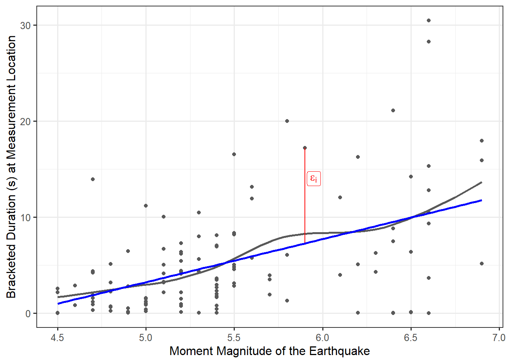

17 Bulding our Statistical Model
In Chapter 10, we introduced the statistical modeling framework. In particular, our general model (see Equation 10.1) for the data generating process was
\[\text{Response} = \text{function}(\text{predictor variables, parameters}) + \text{noise}.\]
Recall that this model has two components:
- A deterministic component which takes the form of a function of variables and unknown parameters. It is often this component on which we would like to make inference.
- A stochastic component which captures the unexplained variability in the data generating process.
In the previous unit, we made use of this model, but we only scratched the surface of its potential applications. In this unit, we explore some of the capabilities of such a model. Specifically, we consider a model for the data generating process such that the deterministic component is a smooth function (specifically, a line) of potentially several variables. In general, this model building process is known as regression.
Definition 17.1 (Regression) Used broadly, this refers to the process of fitting a statistical model for the data generating process to observed data. More specifically, it is a process of estimating the parameters in a data generating process using observed data.
17.1 Statistical Model for A Quantitative Response and Quantitative Predictor
Recall that in Chapter 10, we described a general model for the data generating process of a quantitative response as a function of a single parameter:
\[(\text{Response})_i = \mu + \varepsilon_i\]
where \(\mu\) represented the average response. We noted that this model is fairly limited as it does not allow the response to depend on additional information collected on each unit. In particular, we might consider a model of the form
\[(\text{Bracketed Duration})_i = \mu + \varepsilon_i \tag{17.1}\]
for the data generating process of the bracketed duration. However, this model does not allow the bracketed duration at a location to depend on the magnitude of the corresponding earthquake. We would like to extend it so that we can account for this additional information.
It is often easier to discuss modeling in the context of the graphics used to visualize them. Consider the Seismic Activity Case Study described in Chapter 13. Let’s begin with a broad question:
In general, does the bracketed duration tend to change as the magnitude of the corresponding earthquake changes?
As we are interested in predicting the bracketed duration, we will treat it as the response. In order to imagine what an appropriate model for how the bracketed duration is generated as a function of the magnitude of an earthquake, consider the graphical summary of how these variables are related. As discussed in Chapter 16, we can use a scatter plot to visualize the relationship between our response and predictor. Figure 17.1 overlays a smoothing spline (grey) on the observed data; however, it also includes a proposed model (blue) for the data generating process for which the bracketed duration is linearly related to the magnitude of the corresponding earthquake.
Suppose we feel that this line is a good model for the data generating process. Before proceeding, consider what this statement says. We are not trying to say that the relationship explains every response we observe. Instead, the relationship explains the underlying trend — what happens on average. While not perfect, this linear relationship at least appears plausible. Therefore, we replace \(\mu\) in Equation 17.1 with the expression for a line; this results in
\[(\text{Bracketed Duration})_i = \beta_0 + \beta_1 (\text{Magnitude})_i + \varepsilon_i \tag{17.2}\]
where \(\beta_0\) represents the intercept of the line and \(\beta_1\) the slope. Both the bracketed duration and the magnitude of the corresponding earthquake are variables that are measures for each observation. The terms \(\beta_0\) and \(\beta_1\) are unknown constants (parameters) governing the model for the data generating process.
Observe that very few points in Figure 17.1 actually fall on the proposed line in the graphic, which is to be expected. This emphasizes the idea that the deterministic portion of the model is not meant to fully capture a data generating process since variability is inherent in any process. This is why statistical models embed a deterministic component alongside a stochastic component — to capture the variability due to error or noise in the data generating process.
The model suggests that the bracketed duration at a location is primarily determined by the magnitude of the corresponding earthquake; however, there is a component we cannot explain. That is, the model does not explain why, for example, when an earthquake with a magnitude of 5.5 hits, all locations do not have the same bracketed duration. This noise is picked up by the \(\varepsilon_i\) term in the model (as illustrated for a single observation by the red line in Figure 17.1). The model is only capturing the general trend. As in Chapter 10, we refine this model for the data generating process further by placing additional conditions on the random noise term in order to aid in conducting inference.
Simple Linear Regression Model
For a quantitative response and a quantitative predictor, the general form of the simple linear regression model is
\[(\text{Response})_i = \beta_0 + \beta_1 (\text{Predictor})_i + \varepsilon_i \tag{17.3}\]
where \(\beta_0\) and \(\beta_1\) are parameters governing the model for the data generating process.
17.2 Estimating the Parameters
Recall the goal of statistics — to use a sample to say something about the underlying population. There is something intuitive about using the sample mean as an estimate of the population mean; however, now we have a model for the data generating process that has two parameters (the intercept and the slope). We want a method that jointly estimates these parameters.
Before discussing a specific estimation procedure, it is worth emphasizing that our model for the data generating process has two parameters. In equation Equation 17.3, both \(\beta_0\) and \(\beta_1\) are unknown constants governing the data generating process; they are parameters. As discussed in Chapter 3, parameters are unknown values, and they will always be unknown. We can use available data to estimate these parameters (either point estimates for interval estimates), and we can use available data to determine if there is evidence the parameter falls outside of a specific region (hypothesis testing), but we will never be able to definitely state the value of these parameters from a sample. As a result, we do not “compute” the values of \(\beta_0\) and \(\beta_1\); we can only estimate them. Indeed, nearly every scientist and engineer is undoubtedly familiar with a line of “best fit.” We are emphasizing here that any such line simply estimates the parameters in our model for the data generating process.
We now turn to how such point estimates are constructed. Our model in Equation 17.3 posits a linear deterministic portion for the data generating process, and we want to use the data observed to estimate what that relationship looks like. That is, we want to draw a line through the points that gives the “best fit.” Figure 17.2 illustrates this for a hypothetical dataset; it compares two estimated relationships. Again, these are just estimates; neither represents the actual line from which the data was generated. Examining the two estimated models, something inside us knows that the blue line is preferred to the orange line. The orange line does not seem to represent the pattern in the data because it strays from the cloud of observed points. Intuitively, a model that adequately describes the relationship between the two variables should go through the observed points. Trying to formalize this, we are saying we want a line that is somehow simultaneously as close to all the data as possible.

The most widely used method for accomplishing this goal, for estimating the parameters in Equation 17.3, is known as “the method of least squares.” For this reason, the resulting parameter estimates are often referred to as least squares estimates. This method essentially chooses estimates for the parameters that minimize the amount of error within the dataset.
Definition 17.2 (Least Squares Estimates) Often called the “best fit line,” these are the estimates of the parameters in a regression model chosen to minimize the sum of squared errors. Formally, for Equation 17.3, they are the values of \(\beta_0\) and \(\beta_1\) which minimize the quantity
\[\sum_{i=1}^n \left[(\text{Response})_i - \beta_0 - \beta_1(\text{Predictor})_{i}\right]^2.\]
The resulting estimates are often denoted by \(\widehat{\beta}_0\) and \(\widehat{\beta}_1\).
For those familiar with calculus, we can imagine finding the values of the parameters which minimize the above quantity by taking partial derivatives, setting those partial derivatives equal to 0, and solving the resulting system of equations. In practice, the estimation is carried out numerically using statistical software.
Estimation is often associated with statistics. However, the least squares estimates are actually the result of a mathematical minimization process. In order to make inference on the parameters, we need to quantify the variability in those estimates — that is the heart of a statistical analysis. That is, the statistical aspect is moving into one of the components of the Distributional Quartet. In order to construct a model for the sampling distribution of these statistics, we place additional conditions on the stochastic portion of the model for the data generating process. That is the focus of the next chapter.